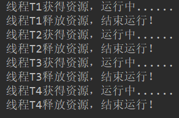

Semaphore介绍 Semaphore又叫做信号量，使用它可以限制同一时间访问同一资源的线程数量；
我们来看下Semaphore同步工具使用Demo：
1 2 3 4 5 6 7 8 9 10 11 12 13 14 15 16 17 18 19 20 21 public class SemaphoreDemo public static void main (String[] args) Semaphore semaphore = new Semaphore(1 ); Runnable runnable = () -> { try { semaphore.acquire(); System.out.println("线程" + Thread.currentThread().getName() + "获得资源，运行中......" ); Thread.sleep(3000 ); System.out.println("线程" + Thread.currentThread().getName() + "释放资源，结束运行！" ); semaphore.release(); } catch (InterruptedException e) { return ; } }; new Thread(runnable, "T1" ).start(); new Thread(runnable, "T2" ).start(); new Thread(runnable, "T3" ).start(); new Thread(runnable, "T4" ).start(); } }
在这个Demo中，实例化了一个参数为1的Semaphore对象，在Runnable里通过semaphore.acquire()方法尝试获取资源锁，由于在实例化Semaphore对象时，传入的参数为1，所以同一时刻只允许一个线程获得资源锁，在Runnable运行结束时，通过semaphore.release()方法释放资源锁。
程序运行结果：

Semaphore源码分析 Semaphore源码相较于CyclicBarrier复杂一点，与ReentrantLock的源码类似，有三个内部类，Sync、NonfairSync、FairSync，其中Sync类继承自AQS类，NonfairSync与FairSync类继承字Sync类。
与ReentrantLock一样，Semaphore也有两个构造函数：
1 2 3 4 5 6 7 8 9 10 11 12 public Semaphore (int permits) sync = new NonfairSync(permits); } public Semaphore (int permits, boolean fair) sync = fair ? new FairSync(permits) : new NonfairSync(permits); }
Semaphore构造函数中传入的有效资源访问线程数有趣的是它可以是正数和负数，当它为正数时，需要先获取锁(acquire)才能访问资源同一时间下仅能有正数个线程访问这一资源，而当其为负数时，需要先释放(release)锁才能访问资源。
首先来看下acquire()方法的源码：
1 2 3 4 5 6 7 8 9 10 11 12 13 14 15 16 17 18 19 public void acquire () throws InterruptedException sync.acquireSharedInterruptibly(1 ); } public void acquire (int permits) throws InterruptedException if (permits < 0 ) throw new IllegalArgumentException(); sync.acquireSharedInterruptibly(permits); } public final void acquireSharedInterruptibly (int arg) throws InterruptedException { if (Thread.interrupted()) throw new InterruptedException(); if (tryAcquireShared(arg) < 0 ) doAcquireSharedInterruptibly(arg); }
acquire()方法通过调用AQS类的acquireSharedInterruptibly()模板代码实现；在AQS类的分析中，我们已经分析过了acquireSharedInterruptibly()方法，acquireSharedInterruptibly()方法又会去调用子类的重写的tryAcquireShared()方法，在Semaphore类里面Sync类并没有重写tryAcquireShared()方法，而是交给了FairSync类和UnfairSync类去重写。
非公平锁中，tryAcquireShared()方法源码：
1 2 3 4 5 6 7 8 9 10 11 12 13 14 15 16 17 protected int tryAcquireShared (int acquires) return nonfairTryAcquireShared(acquires); } final int nonfairTryAcquireShared (int acquires) for (;;) { int available = getState(); int remaining = available - acquires; if (remaining < 0 || compareAndSetState(available, remaining)) return remaining; } }
在非公平锁中，tryAcquireShared通过父类nonfairTryAcquireShared方法实现，在nonfairTryAcquireShared方法中，获取AQS类的state变量值并计算新值，当新值大于等于0且更新新值成功则获取资源锁成功，否则会将该线程阻塞并放入等待队列中。
公平锁中，tryAcquireShared()方法源码：
1 2 3 4 5 6 7 8 9 10 11 12 13 14 protected int tryAcquireShared (int acquires) for (;;) { if (hasQueuedPredecessors()) return -1 ; int available = getState(); int remaining = available - acquires; if (remaining < 0 || compareAndSetState(available, remaining)) return remaining; } }
在公平锁中tryAcquireShared方法与非公平锁的tryAcquireShared方法实现原理类似，不同的是，在非公平锁的tryAcquireShared方法中，首先会去判断当前线程是否是等待队列的队头线程，不是的话直接返回，将线程阻塞。
分析完加锁的源码，接着看下释放锁的源码：
1 2 3 4 5 6 7 8 9 10 11 12 13 14 15 16 17 18 19 public void release () sync.releaseShared(1 ); } public void release (int permits) if (permits < 0 ) throw new IllegalArgumentException(); sync.releaseShared(permits); } public final boolean releaseShared (int arg) if (tryReleaseShared(arg)) { doReleaseShared(); return true ; } return false ; }
在AQS类中releaseShared()方法通过子类重写的AQS类的tryReleaseShared()方法实现释放锁，tryReleaseShared()方法由Sync类实现，Sync重写tryReleaseShared()方法源码：
1 2 3 4 5 6 7 8 9 10 11 12 13 14 protected final boolean tryReleaseShared (int releases) for (;;) { int current = getState(); int next = current + releases; if (next < current) throw new Error("Maximum permit count exceeded" ); if (compareAndSetState(current, next)) return true ; } }
总结 通过ReentrantLock源码与Semaphore源码的对比，发现二者的实现极为相似，ReentrantLock对象在构造时实际上同时构造出了一个state为0的AQS类(子类)，而Semaphore对象在构造时，同时构造出的AQS类(子类)的state值是由用户确定的；ReentrantLock在加锁时，当state从0变为1即加锁成功，其他线程再尝试加锁会阻塞，而Semaphore在尝试加锁时，会将state值减一(或指定值)，当state小于0或者更新state值失败时会加锁失败线程阻塞；ReentrantLock在释放锁时，会将state的值由1变成0，而Semaphore释放锁是简单的将state加一并刷新state值，成功则释放锁成功；二者均有公平锁和非公平锁之分。ReentrantLock在一定程度上可近似的认为是一个state值为1的Semaphore对象。